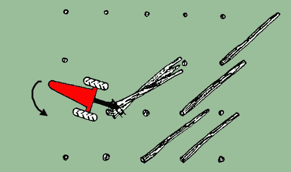

|
INFORME TÉCNICO TECFOR Nº 03 |
|
Madereo con Trineumático TECFOR: 2ª parte
En el número
anterior explicamos la forma en que el cargador trineumático puede extraer madera corta desde el bosque
. En el presente informe ilustramos dos métodos para maderear trozos largos .
2.2.1.- Largo total del árbol con extracción
hacia adelante
Paso 1 : El TECFOR levanta el trozo N°1 balanceándolo sobre el N°2. Luego se
levantan ambos y se arrastran hacia el trozo N°3.
Paso 2 :
Se levanta luego los 3 trozos . El TECFOR gira su parte posterior

Paso 3 : Mientras el equipo gira , se sube la pluma para
levantar las trozas sobre el neumático delantero. Las trozas se colocan entonces , sobre el brazo que está
soldado al chasis sobre la rueda . La máquina puede iniciar su marcha y viajar con la carga hacia adelante
.
2.2.2.- Largo total del árbol con extracción
en retroceso
Paso 1 : El TECFOR sale y toma la troza N°1 . Se gira y se acerca a la troza N°2 ,
colocándola sobre la N°3. Se posicionará luego ambas con la troza N°1 para tomarlas con la
garra .
Paso 2 : Se coge la troza N°4 y se coloca sobre la N°5
, trasladándose arriba hacia la pila de trozas .
Paso 3 : Las trozas N°4 y 5 se colocan sobre la pila
. Se levantan entonces todas las trozas y se extrae la carga retrocediendo .
Como se dijo anteriormente esta es la técnica más utilizada en el madereo con árboles de largo
total , pues permite maximizar la capacidad de carga del equipo.
Sin embargo presenta mayores riesgos , pues si bien el TECFOR , tiene ventana trasera con espejo panorámico, ellos no podrán igualar la visual hacia adelante .
Otro inconveniente que se menciona comúnmente al madereo en retroceso es que al tener menor visibilidad
hacia atrás , el neumático trasero está más expuesto a golpear tocones , con el consecuente
posible daño . Esta situación ha sido prevista en nuestro equipo , con una horquilla trasera más
ancha , lo que le permite el uso de cadenas para proteger dicho neumático .
TECFOR ES TECNOLOGIA FORESTAL